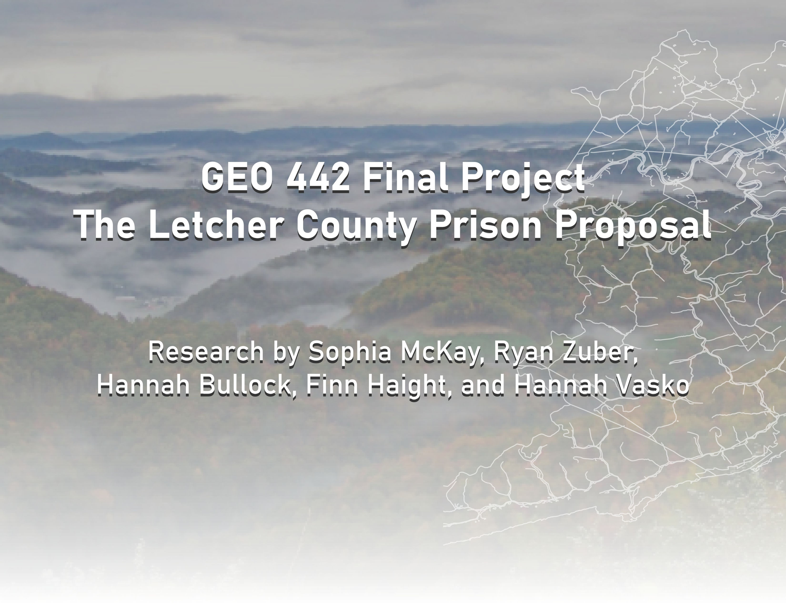

Introduction
-
Why is Letcher County an unsustainable location for a new federal prison?
In creating this website, we wanted to address the issues, both environmental and social, that are prosed by the implementation of the Letcher County Prison Proposal, first introduced in 2006. While some argue that the construction of a federal prison in this small corner of Eastern Kentucky will create jobs and foster opportunity, we hope to dispel these myths by explaining the multitude of harmful impacts this would cause.
Coal, Prisons, and Appalachia
-
How are the coal industry and the incarceration system related? And why are they so present in Appalachia?
-

According to Judah Schept in his book Coal, Cages, Crisis: “mass incarceration would not be possible, of course, without the prisons in which people are incarcerated. And Central Appalachia is home to many prisons.”
- The phenomenon he labeled as “carceral social reproduction”-- the dependency on the construction of prisons to alleviate the economic crises associated with unemployment, degrading or nonexistent infrastructure, and the collapse of health, education, and revenue generating systems— allows us to connect eastern Kentucky, an area hosting 5 federal prisons, to the carceral state. In fact, at Kentucky’s current incarceration rate, the entire state will be imprisoned in 113 years.
- Extraction has been a major theme throughout the history of Kentucky, especially in regards to the coal industry, as it refers to removing the value from one area and exporting it somewhere else. In the case of Appalachia, this occurs exclusively to the benefit of those who do not live in the region, and harms the livelihoods of residents who are forced to live next to the sites of extraction. What does this mean?
- Ever since Kentuckians in Appalachia were pushed off of their family farms and into the coal mines, their lives have been in the hands of an extractive industry. The departure of the coal industry from Appalachia left communities reeling for ways to generate revenue. This is part of the reason we see so many “undesirable” land uses across the region. This coupled with the “Tough on Crime” policies from the mid to late 1900s created a system that extracted people from urban settings, and “deposited” them in the rural prisons of Appalachia.
-
Therefore, Appalachia has been rendered as a “national sacrifice zone.” It has become a region of planned obsolescence… meaning that the presence of economic devastation both painted Appalachia as a wasteland AND justified the continuation of its polluting.
How many more federal prisons does Appalachia really need?
- Well, none. Studies show that the national incarceration rate is gradually going down AND that out of the 5 Kentucky counties that already have federal prisons, all of them are still considered economically distressed per the Appalachian Regional Commission Criteria.
Why Letcher County?
Similar to many counties in the Southeastern region of Kentucky, Letcher County was a prime location for mountaintop removal coal mining. Mountains all over Appalachia are blown up to get the coal out all while maximizing profit. What’s left behind is a flat expanse of toxic, barren land, and a community that scarcely sees said profit. According to Hal Rogers, the region’s Congressional Representative, the solution is, yet another, federal prison. Furthermore, as stated by SCRMA, the Surface Mining Control and Reclamation Act of 1977, the mined land needs only to be turned to a “higher use,” and a revenue-generating incarceration facility somehow fits that bill.
Background: According to the U.S. Census Bureau Data circa 2024, Letcher County is home to approximately 20,000 individuals: 97.6% of whom are white, 25% of residents are considered impoverished, and among them all there persists a 40% employment rate. While these statistics portray Letcher County as a stereotypical homogenous and in-need Appalachian community, they negate so much of the “why?” and therefore rob residents of the “what could be?” They gloss over the fact that at the time of the prison proposal, locals “hunted, foraged, rehabilitated injured birds, held family reunions, gathered for religious retreats, organized and held music festivals,” and more (Schept, 2022). They try to divert from the fact that “despite representations as a remote hinterland, Central Appalachia is in fact part of truly global flows: of capital, commodities, technologies, products, and people,” (Schept, 2022).


{kind=link}
{kind=link}